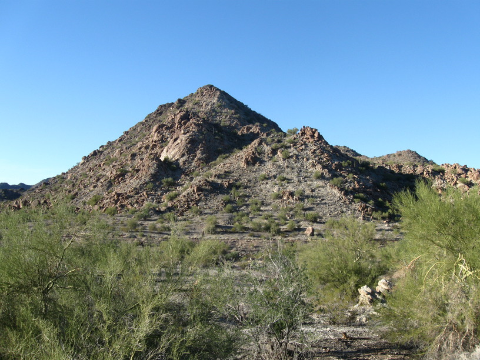

30 Nov 2008, Salome, AZ
I was just in a daze most of the day. I had a flat before I even left, so I patched it (& swapped the front & back tubes). Then I got another flat after only 1/2 hr. Thankfully that seemed to be it for now, and I had no more trouble after that.
I stopped pretty early b/c there is a 30 mile gap between campgrounds. Ended up being a good thing, because I'm not the only cyclist here tonight! Two couples—Barbara & Michael from Boulder & Gabi & Christian from Bavaria—were already here, so I got to meet them & hear about all their travels. They're riding east, so they also had some tips for me about campsites to avoid (& about good ones too). Michael is another former-engineer-turned-business-consultant, so it was fun to hear about his career path. Gabi & Christian are German and so of course there was interesting cultural exchange there.
Tomorrow I'm hoping to ride 78 miles, so I'm going to hit the sack.
